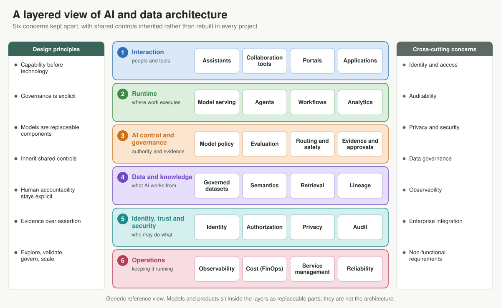
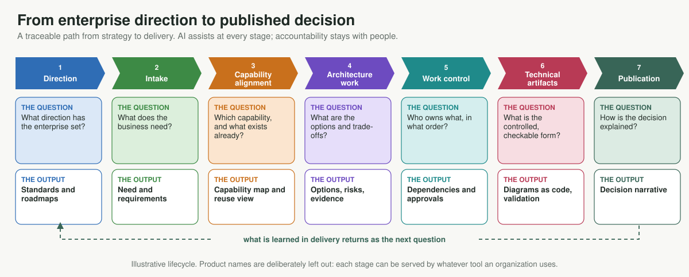

about
I'm an enterprise architect working on how technology, information, and organizations change together. I'm interested in artificial intelligence, data architecture, and designing systems that help people think, learn, and work together more effectively. Beyond my professional role, I'm curious about geography, maps, history, and the connections between seemingly unrelated ideas. I'm especially interested in how AI can support cognitive development and extend cognitive longevity, helping people stay curious, capable, and creative over time.
My general approach to AI and data architecture is on the architecture practice page.
This is a personal website. The views and projects shared here are my own, not statements on behalf of an employer.
things I'm building
Four projects exploring AI, knowledge, geography, and shared experiences. These are experiments at different stages of development.
Personal Cognitive Architecture (PCA)
PCA is a governed, local-first personal AI platform exploring how structured knowledge, reusable reasoning, and controlled AI agents can augment human thinking. It connects capture, validation, knowledge organization, retrieval, and action, and is designed to keep consequential decisions under human control. Models, runtimes, and services connect as replaceable adapters, plugins, or modules, depending on context.
The longer-term question is how AI can support cognitive development and longevity.

CORE
CORE is an experimental framework for organizing knowledge and providing AI assistants with consistent, reusable project context. It combines lightweight folder structures, source references, and instructions with early prototypes for mobile knowledge capture and knowledge graph analysis.
The project explores how structured context can make AI-assisted work more coherent, traceable, and portable across different tools and platforms.

Ontario Crown Land Explorer
An experimental interactive map that brings public geographic data together to make Ontario Crown land easier to discover and explore. It explores how mapping technology can help people navigate and understand the natural landscape. Today it maps official Crown land data for the Ottawa area and shows your location; AI assistance for matching interests to land and explaining what applies is planned.

LetsGo
LetsGo is an experimental event discovery app that helps people find things to do together by browsing activities independently and highlighting overlaps to discover their shared interests.
Designed for friends, groups, and partners, it focuses on shared activities and easier planning, not on matching strangers. Today it is a clickable interface with sample events; overlap and planning are still to come.

More experiments are in progress. I will link selected public work here when it is ready to share.
visual notes
I often think in diagrams: capability maps, operating models, system boundaries, and the relationships between people, information, and technology. The first two are about how I work rather than about any one system.
Reference views




More diagrams will be added here as they are ready to share, each with its context.
occasional writing
Not really a blog. Short notes when I have something worth documenting: what I tried, what I learned, and what I might do differently next time.
elsewhere
github.com/jjuniper-dev for code and experiments. Selected work will be linked from the projects above as it is ready to share.